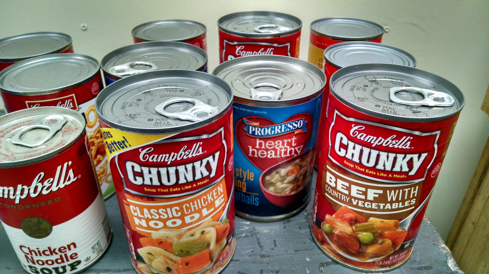
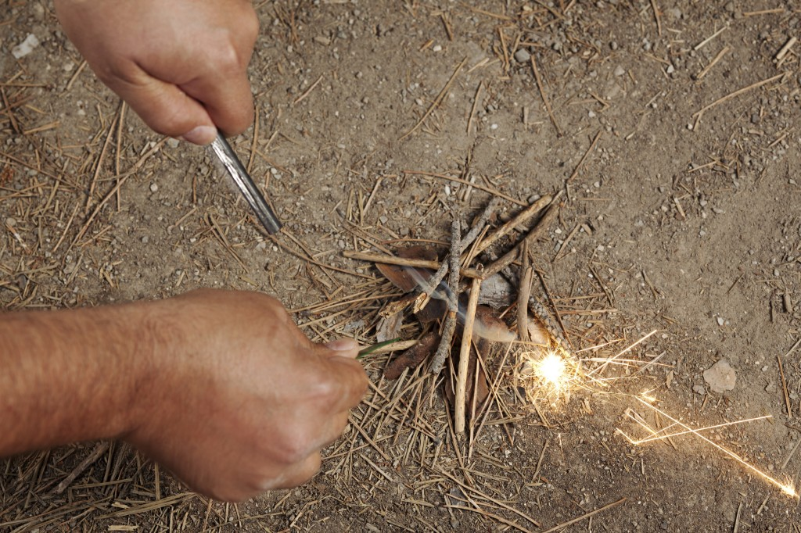
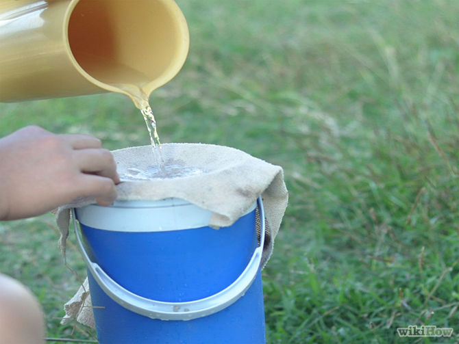
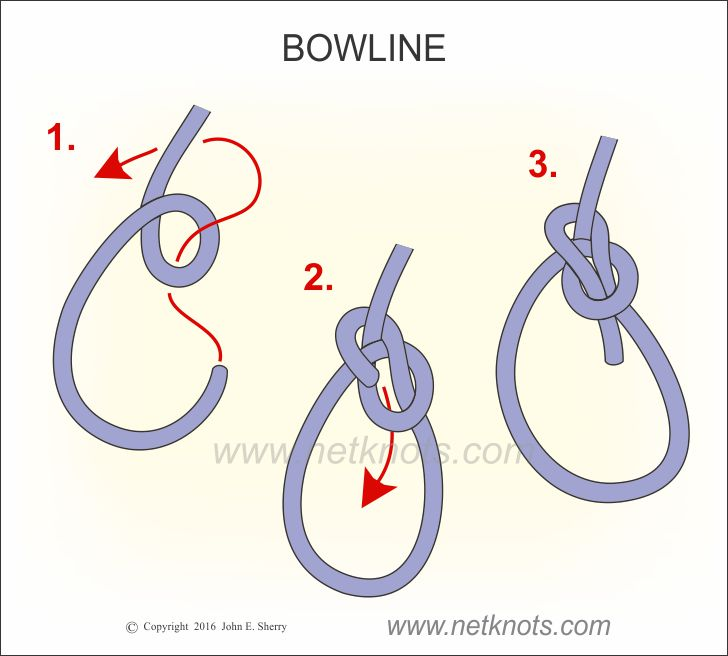

Supplies:
- Canned food
- Filtered water or a water filter
- First Aid kit
- Any medications you need
- Tools (shovel, utility knife, ropes, duct tape, hammer,flashlight)
- Weapons (baseball bats, hunting knives, guns, etc.)
- Soap
- Bleach

How to build a fire without matches:
- Build a tinder nest using dry plant material.
- Grab a big flat rock to use as a flint.
- Cut a small piece of cloth and place it against the rock.
- Use a blade of a knife and quickly scrape against the rock until spark catch on the cloth.
- Transfer cloth to tinder and gently blow.
- Gradually add larger pieces of wood to grow the fire.

How to filter water:
- You can use coffee filters, layers of paper towels, a bandana, or any tightly woven cloth to remove big debri.
- Boiling water for 5-10
- Bleach without any additives
- ⅛ tsp per gallon
- Let sit for at least 1 hr before drinking.

How to tie knots:
- Tutorial
- Bowline uses:
- Mooring a small boat to a pier.
- Emergency applications where a fixed loop is needed
- Joining two ropes bowline to bowline
